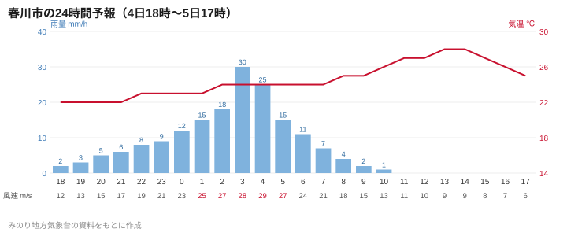

ライブ
【速報中】台風21号接近 4地区に避難指示
台風21号は5日（月）午前4時ごろ、春川市の西約30キロを通過する見込み。暴風・高潮警報が発表され、鉄道は今夜運休、避難所24カ所が開設されている。最新情報を新しい順に伝える。
みのり地方気象台の資料をもとに本紙気象担当が作成した春川市の予報です。2026年10月4日（日）17時発表。
日曜夜遅くから月曜朝にかけて最大風速30メートル、最大瞬間風速45メートル。最も強まるのは4時ごろ。
みのり湾沿岸で月曜4〜6時ごろ、潮位が標準より最大2.4メートル上昇（満潮5時12分）。
1時間に最大40ミリ。月曜18時までの24時間に市街地170ミリ、山地250ミリ。
みのり湾で6メートル、沖合で8メートル。
錦橋観測所の水位が月曜未明に避難判断水位（4.1メートル）に達するおそれ。
月曜午後まで落雷や突風のおそれ。

| 日付 | 天気 | 最高 | 最低 | 降水確率 | 風 | 信頼度 |
|---|---|---|---|---|---|---|
| 10/5（月） | 暴風雨のち晴れ | 28° | 21° | 90% | 南 15m/s | A |
| 10/6（火） | 晴れ、暑い | 29° | 20° | 0% | 西 6m/s | A |
| 10/7（水） | 晴れのち曇り | 26° | 18° | 20% | 北西 4m/s | B |
| 10/8（木） | 曇り時々雨 | 23° | 17° | 60% | 北東 5m/s | C |
| 10/9（金） | 曇りのち晴れ | 22° | 15° | 30% | 北 4m/s | B |
| 10/10（土） | 晴れ | 23° | 14° | 10% | 北 3m/s | B |
| 10/11（日） | 晴れのち曇り | 22° | 15° | 20% | 北東 3m/s | C |
予報の信頼度：A 高い、B やや高い、C やや低い
灯籠まつりの週末（10、11日）は、土曜は晴れ、日曜は晴れのち曇りの予報。夜は16度前後まで下がるので、灯籠流し（両日19時30分〜21時）には上着を。
| 満潮 | 5時12分（高潮により標準より最大2.4メートル高い見込み） |
| 干潮 | 11時30分 |
| 満潮 | 17時41分 |
| 干潮 | 23時58分 |
台風21号は5日（月）午前4時ごろ、春川市の西約30キロを通過する見込み。暴風・高潮警報が発表され、鉄道は今夜運休、避難所24カ所が開設されている。最新情報を新しい順に伝える。

最大瞬間風速45メートルの暴風、山地で最大250ミリの大雨に加え、5日朝の満潮と重なる高潮のおそれがある。4日午後には警報が出る見通しで、春川鉄道は4日午後に運休の有無を判断する。
春川でいま話題のニュース5本を、平日毎朝6時30分にお届けします。無料です。
登録によりプライバシーポリシーに同意したものとみなします。配信はいつでも停止できます。